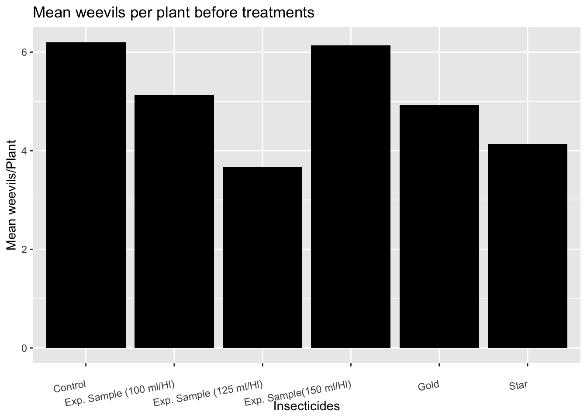
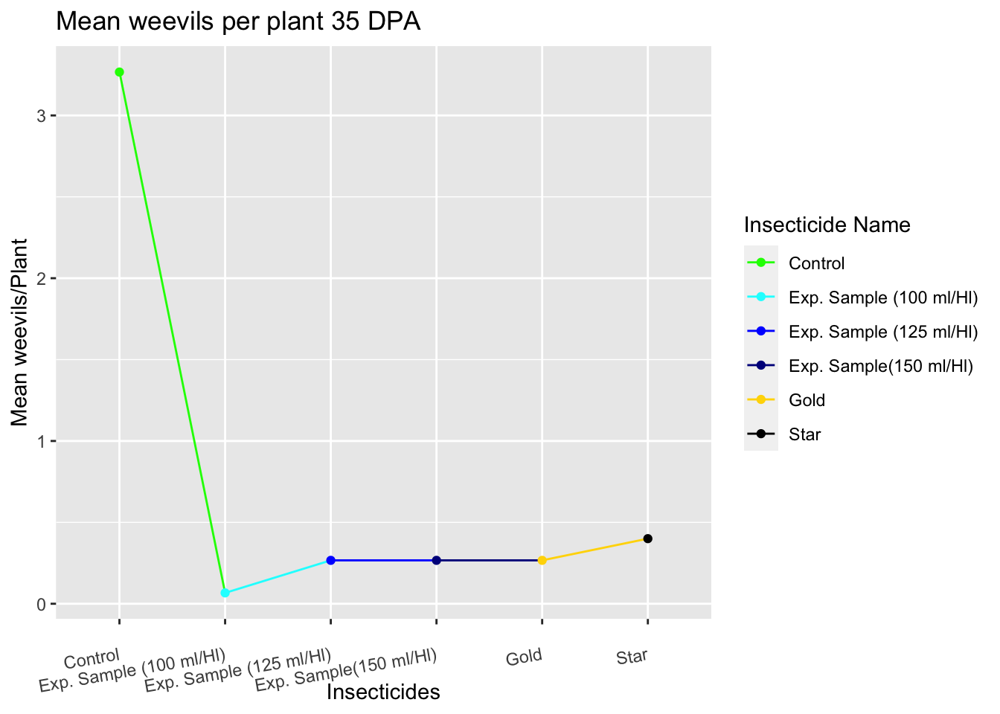
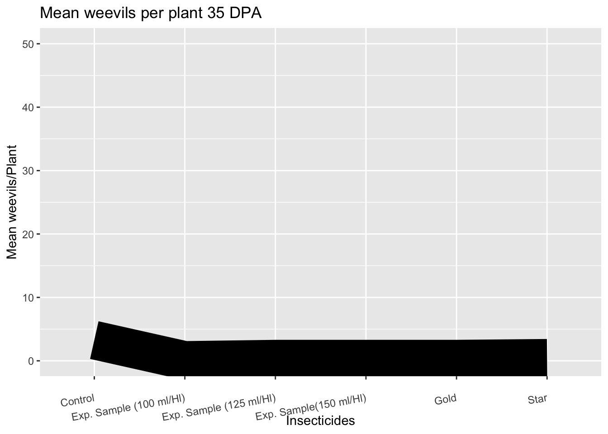

This figure uses different colors to make clear the difference between treatments. As the concentration of the experimental sample increases, the hue of the blue color increases as well making sense (to me).
This figure violates the channel correct use, since it uses the same color for every treatment, still is possible to understand what is going on but it takes significantly more time.
Code
ggplot(Bmeans, aes(x =`Insecticide Name`, y = AVG)) +geom_bar(stat ="identity", fill ="black") +labs(title ="Mean weevils per plant before treatments",x ="Insecticides",y ="Mean weevils/Plant") +theme(axis.text.x =element_text(angle =10, vjust =0.5, hjust =1))

Discriminability
Figure 3
This figure uses different colors and marks (dots) to make clear the difference between treatments.
Code
ggplot(Bmeans, aes(x =`Insecticide Name`, y = AVG5, group =1, color =`Insecticide Name`)) +geom_line() +geom_point() +# Adds points to the line graph for clarityscale_color_manual(values = my_colors) +labs(title ="Mean weevils per plant 35 DPA",x ="Insecticides",y ="Mean weevils/Plant") +theme(axis.text.x =element_text(angle =10, vjust =0.5, hjust =1))

Figure 4
A thick line, no color difference, no marks in between treatments, makes difficult to separate them. Same channel for everything.
Code
ggplot(Bmeans, aes(x =`Insecticide Name`, y = AVG5, group =1)) +geom_line(size =30, color ="black")
Warning: Using `size` aesthetic for lines was deprecated in ggplot2 3.4.0.
ℹ Please use `linewidth` instead.
Standard Error of the Mean (SEM), and bars for each treatment are presented using different channels. They are easily distinguishable between each other.
As we compare the insecticide treatments with the control, this figure clearly depicts the differences between them and the control, using different channels,
Here, I’m using the same data at 35 dpa, but the scale of the Y-axis is incorrect. The same channels are used for everything without any markers for separability, resulting in an awful graph.
Code
ggplot(Bmeans, aes(x =`Insecticide Name`, y = AVG5, group =1)) +geom_line(size =15, color ="black") +# Adjust line size to a reasonable valuescale_y_continuous(limits =c(NA, 50)) +# Set the upper limit of y-axis to 50labs(title ="Mean weevils per plant 35 DPA",x ="Insecticides",y ="Mean weevils/Plant") +theme(axis.text.x =element_text(angle =10, vjust =0.5, hjust =1))

Source Code
---title: “ASSIGNMENT 4”subtitle: “Marks and Channels”author: “Lucas”date: February 14, 2024 image: "weevil.jpg" categories: [Assignment, DataViz]code-fold: truecode-tools: truedescription: “Bar graphs and basic data viz for an insecticide trial”---# **Expressiveness and Effectiveness**## ```{r}library(readxl)Weevils <-read_excel("~/Mi unidad/Uidaho/Clases/PhD/Spring 2024/BCB 520/Data/Weevils.xlsx")head(Weevils)library(tidyverse)Bmeans <-Weevils %>%group_by(`Insecticide Name`) %>%summarise(AVG =mean(Before),AVG1 =mean(`7 dpa`, na.rm =TRUE), AVG2 =mean(`14 dpa`, na.rm =TRUE), AVG3 =mean(`21 dpa`, na.rm =TRUE), AVG4 =mean(`28 dpa`, na.rm =TRUE), AVG5 =mean(`35 dpa`, na.rm =TRUE) )library(ggplot2)```## **Figure 1** This figure uses different colors to make clear the difference between treatments. As the concentration of the experimental sample increases, the hue of the blue color increases as well making sense (to me).## ```{r}library(tidyverse)Bmeans <-Weevils %>%group_by(`Insecticide Name`) %>%summarise(AVG =mean(Before),AVG1 =mean(`7 dpa`, na.rm =TRUE), AVG2 =mean(`14 dpa`, na.rm =TRUE), AVG3 =mean(`21 dpa`, na.rm =TRUE), AVG4 =mean(`28 dpa`, na.rm =TRUE), AVG5 =mean(`35 dpa`, na.rm =TRUE) )library(ggplot2)my_colors <-c("green", "cyan", "blue", "darkblue", "gold", "black")ggplot(Bmeans, aes(x =`Insecticide Name`, y = AVG, fill =`Insecticide Name`)) +geom_bar(stat ="identity") +scale_fill_manual(values = my_colors) +labs(title ="Mean weevils per plant before treatments",x ="Insecticides",y ="Mean weevils/Plant") +theme(axis.text.x =element_text(angle =10, vjust =0.5, hjust =1))```## **Figure 2** This figure violates the channel correct use, since it uses the same color for every treatment, still is possible to understand what is going on but it takes significantly more time.```{r}ggplot(Bmeans, aes(x =`Insecticide Name`, y = AVG)) +geom_bar(stat ="identity", fill ="black") +labs(title ="Mean weevils per plant before treatments",x ="Insecticides",y ="Mean weevils/Plant") +theme(axis.text.x =element_text(angle =10, vjust =0.5, hjust =1))```# **Discriminability**## **Figure 3**This figure uses different colors and marks (dots) to make clear the difference between treatments.```{r}ggplot(Bmeans, aes(x =`Insecticide Name`, y = AVG5, group =1, color =`Insecticide Name`)) +geom_line() +geom_point() +# Adds points to the line graph for clarityscale_color_manual(values = my_colors) +labs(title ="Mean weevils per plant 35 DPA",x ="Insecticides",y ="Mean weevils/Plant") +theme(axis.text.x =element_text(angle =10, vjust =0.5, hjust =1))```## **Figure 4**A thick line, no color difference, no marks in between treatments, makes difficult to separate them. Same channel for everything.```{r}ggplot(Bmeans, aes(x =`Insecticide Name`, y = AVG5, group =1)) +geom_line(size =30, color ="black") labs(title ="Mean weevils per plant 35 DPA",x ="Insecticides",y ="Mean weevils/Plant") +theme(axis.text.x =element_text(angle =10, vjust =0.5, hjust =1))```# **Separability**## **Figure 5**Standard Error of the Mean (SEM), and bars for each treatment are presented using different channels. They are easily distinguishable between each other.```{r}library(tidyverse)Bmeans <- Weevils %>%group_by(`Insecticide Name`) %>%summarise(AVG =mean(Before),AVG1 =mean(`7 dpa`, na.rm =TRUE),AVG2 =mean(`14 dpa`, na.rm =TRUE),AVG3 =mean(`21 dpa`, na.rm =TRUE),AVG4 =mean(`28 dpa`, na.rm =TRUE),AVG5 =mean(`35 dpa`, na.rm =TRUE),SD_14dpa =sd(`14 dpa`, na.rm =TRUE), N_14dpa =sum(!is.na(`14 dpa`))) %>%mutate(SEM_14dpa = SD_14dpa /sqrt(N_14dpa)) ggplot(Bmeans, aes(x =`Insecticide Name`, y = AVG2, fill =`Insecticide Name`)) +geom_bar(stat ="identity") +geom_errorbar(aes(ymin = AVG2 - SEM_14dpa, ymax = AVG2 + SEM_14dpa), width =0.2) +scale_fill_manual(values = my_colors) +labs(title ="Mean weevils per plant at 14 dpa",x ="Insecticides",y ="Mean weevils/Plant") +theme(axis.text.x =element_text(angle =10, vjust =0.5, hjust =1))```## **Figure 6**Standard Error of the Mean (SEM), and bars for each treatment shares the same channels. They are hardly distinguishable between each other.```{r}library(tidyverse)ggplot(Bmeans, aes(x =`Insecticide Name`, y = AVG2, fill =`Insecticide Name`)) +geom_bar(stat ="identity") +geom_errorbar(aes(ymin = AVG2 - SEM_14dpa, ymax = AVG2 + SEM_14dpa, color =`Insecticide Name`), width =1, size =3) +scale_fill_manual(values = my_colors) +scale_color_manual(values = my_colors) +labs(title ="Mean weevils per plant at 14 dpa",x ="Insecticides",y ="Mean weevils/Plant") +theme(axis.text.x =element_text(angle =10, vjust =0.5, hjust =1))```## **Figure 7**As we compare the insecticide treatments with the control, this figure clearly depicts the differences between them and the control, using different channels,```{r}library(tidyverse)Bmeans <- Weevils %>%group_by(`Insecticide Name`) %>%summarise(AVG =mean(Before),AVG1 =mean(`7 dpa`, na.rm =TRUE),AVG2 =mean(`14 dpa`, na.rm =TRUE),AVG3 =mean(`21 dpa`, na.rm =TRUE),AVG4 =mean(`28 dpa`, na.rm =TRUE),AVG5 =mean(`35 dpa`, na.rm =TRUE),SD_35dpa =sd(`35 dpa`, na.rm =TRUE), # Calculate SD for 35 dpaN_35dpa =sum(!is.na(`35 dpa`))) %>%# Count non-NA values for 35 dpamutate(SEM_35dpa = SD_35dpa /sqrt(N_35dpa)) # Calculate SEM for 35 dpa# Assuming my_colors is already definedggplot(Bmeans, aes(x =`Insecticide Name`, y = AVG5, fill =`Insecticide Name`)) +geom_bar(stat ="identity") +geom_errorbar(aes(ymin = AVG5 - SEM_35dpa, ymax = AVG5 + SEM_35dpa), width =0.2) +scale_fill_manual(values = my_colors) +labs(title ="Mean weevils per plant at 35 dpa",x ="Insecticides",y ="Mean weevils/Plant") +theme(axis.text.x =element_text(angle =10, vjust =0.5, hjust =1))```## **Figure 8**Here, I’m using the same data at 35 dpa, but the scale of the Y-axis is incorrect. The same channels are used for everything without any markers for separability, resulting in an awful graph.```{r}ggplot(Bmeans, aes(x =`Insecticide Name`, y = AVG5, group =1)) +geom_line(size =15, color ="black") +# Adjust line size to a reasonable valuescale_y_continuous(limits =c(NA, 50)) +# Set the upper limit of y-axis to 50labs(title ="Mean weevils per plant 35 DPA",x ="Insecticides",y ="Mean weevils/Plant") +theme(axis.text.x =element_text(angle =10, vjust =0.5, hjust =1))```